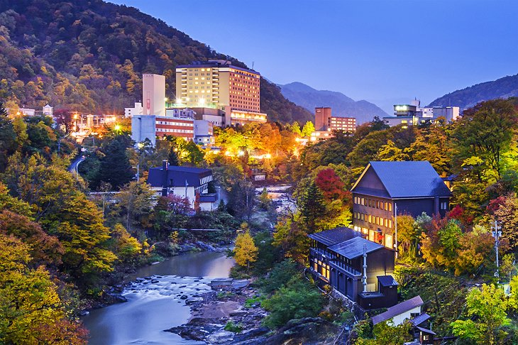
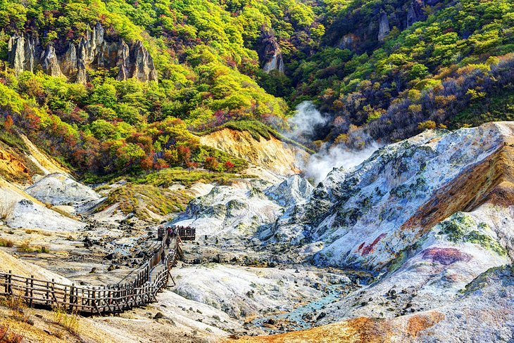
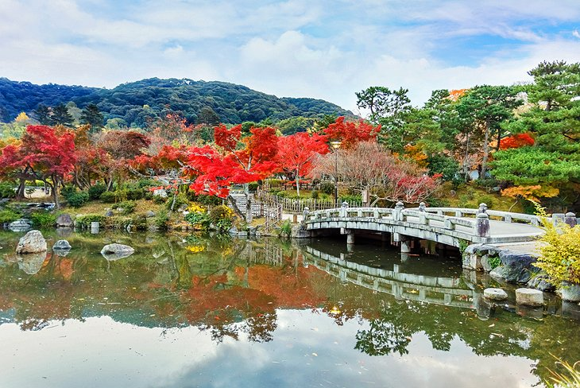
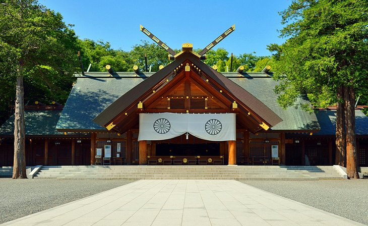

Odori Park
Odori Park (Ōdōri Kōen) is an oasis of green in Sapporo's downtown core that slices through the city.
It stands in stark contrast to the high-rises and offices around it,
and serves as the best place from which to begin exploring this dynamic destination.
1/5

Odori Park
Jozankei Onsen Hot Spring
Less than an hour's drive from Sapporo is the spectacular Jozankei Onsen Hot Springs.
A trip here is a great summer or winter excursion that is well worth the time,
especially if it can be combined with a stopover at one of the area's many fine spa hotels.
Tucked away in a scenic valley with mountains adding to the spectacular scenery,
2/5

Jozankei Onsen Hot Spring
Shikotsu-Tōya National Park
The Shikotsu-Tōya National Park (Shikotsu Tōya Kokuritsu Kōen)
near Sapporo contains in its three separate parts a wide range of beautiful volcanic landscapes, along with many crater lakes and hot springs.
The largest section of the National Park lies at the very gates of Sapporo, making it an ideal day trip just an hour's bus ride away.
3/5

Shikotsu-Tōya National Park
Maruyama Park
On the west side of Sapporo is Maruyama Park (Maruyama kōen),
a multipurpose natural area popular with visitors year-round. In spring, the park's 226-meter-high hill comes alive with the stunningly
beautiful blooms of its more than 1,700 wild cherry trees.
4/5

Maruyama Park
Hokkaidō Shrine
Built in 1871, the Hokkaidō Shrine (Hokkaidō Jingū)
is one of the country's most important (and visited) Shinto religious sites. Located adjacent to Maruyama Park,
the shrine became even more popular after it was dedicated to the soul of much revered Emperor Meiji in 1964.
5/5

Hokkaidō Shrine